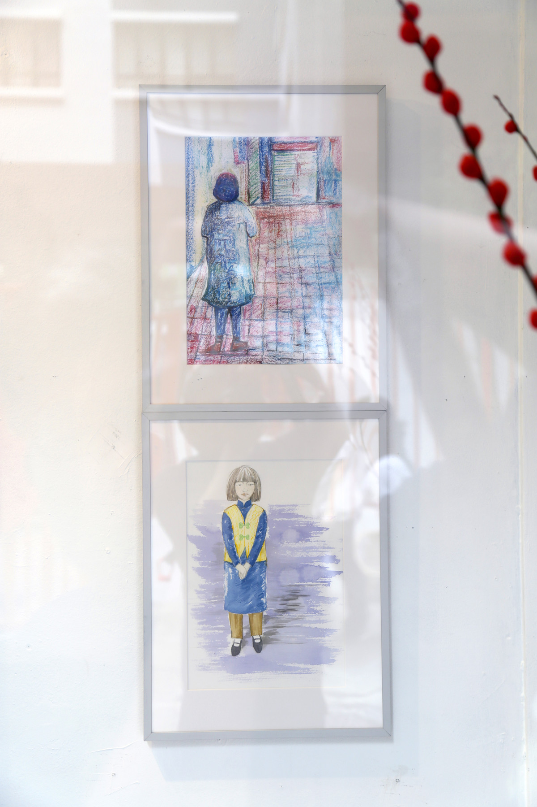
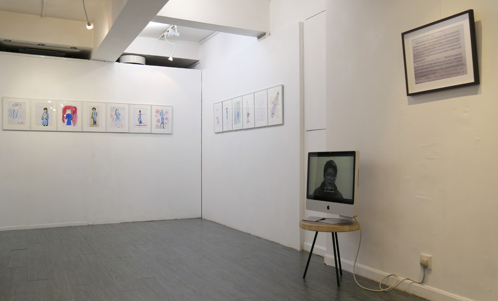
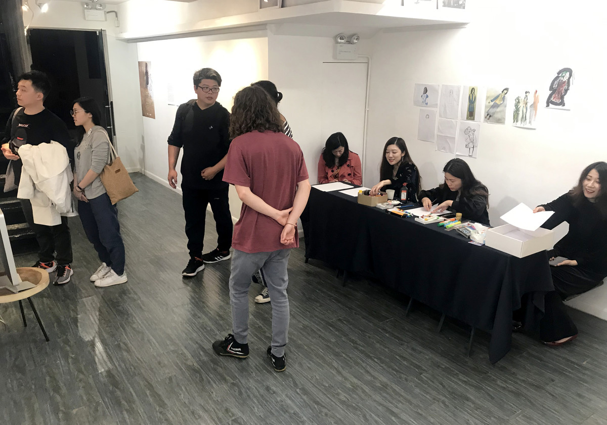
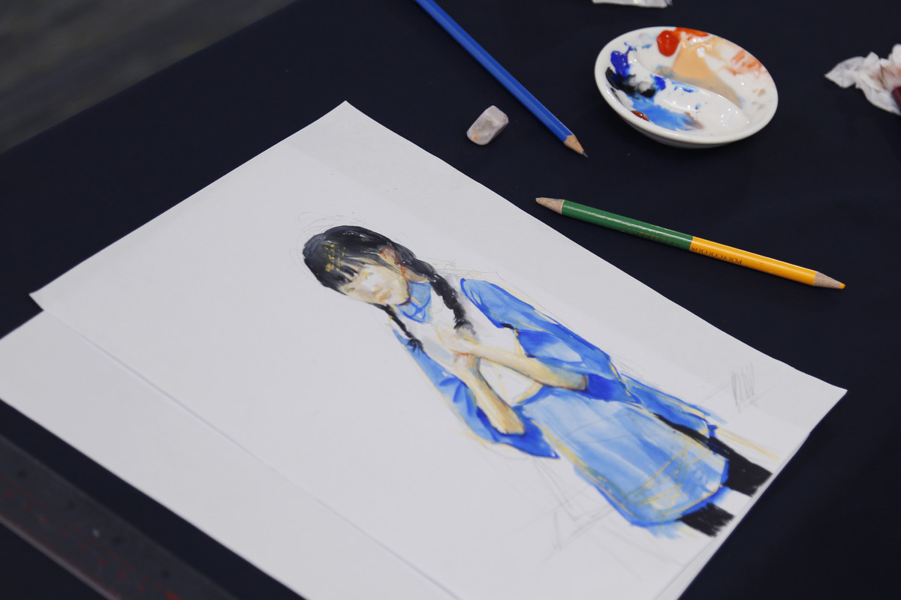

荷李活小姐 | MISS HO LEE WUD

绘画尺寸为21x27cm，摄影尺寸为30x40cm，录像为黑白单屏幕双声道可变尺寸，1分钟，2019
Painting, Interactive art, Mixed medium, video, Painting size is 21x27cm, Photography size is 30x40cm，aluminum escalator, printed on rice paper, video for black and white single-screen dual-channel variable size, 1 minutes, 2019
“你如果认识从前的我，也许会原谅现在的我。”
——张爱玲
艺术家摘取了张爱玲小说中一段关于1940年代初期香港少女的外貌特征描述，在展览期间邀请画廊香港的女性观众将这个“少女”在今天重新画出来，并同期展出。从2011年以来，艺术家持续关注文本、语言与图像之间的意义转译，并将跨文本转译过程中的损失或差异作为另外一种丰富性呈现。
If you know the man who I have been, maybe you can forgive the man who is standing before you.
——Eileen Chang
The artist extracted a description of the appearance and characteristics of a young girl in Hong Kong in the early 1940s from a novel by Eileen Chang. During the exhibition, the female audience of the gallery in Hong Kong were invited to re-draw the "girl" today and present it at the same time. Since 2011, artists have been continuously focusing on the translation of meaning between text, language and image, and presenting the loss or difference in the process of cross-text translation as another richness.

作品实施现场，NIDO ASIA画廊，香港
scene of implementation, NIDO ASIA Gallery, HongKong

作品实施现场，NIDO ASIA画廊，香港
scene of implementation, NIDO ASIA Gallery, HongKong

作品实施现场，NIDO ASIA画廊，香港
scene of implementation, NIDO ASIA Gallery, HongKong